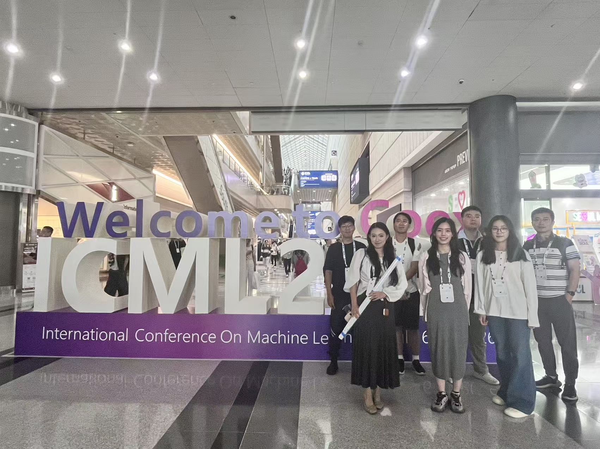
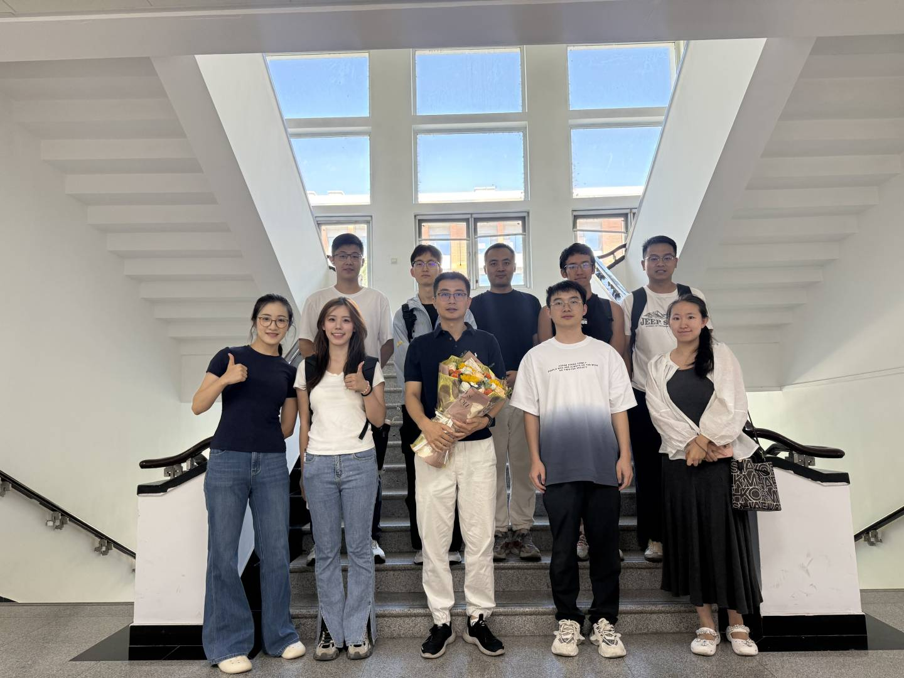
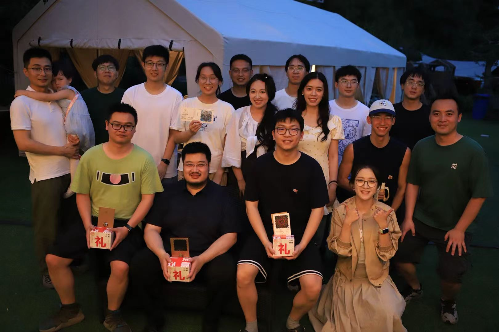
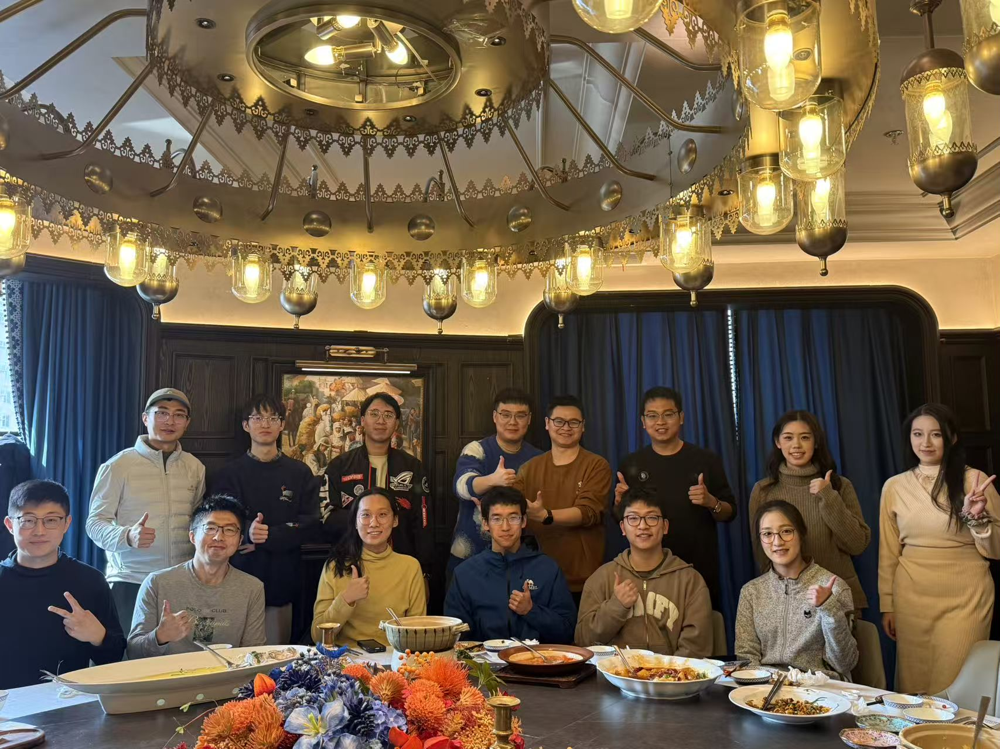
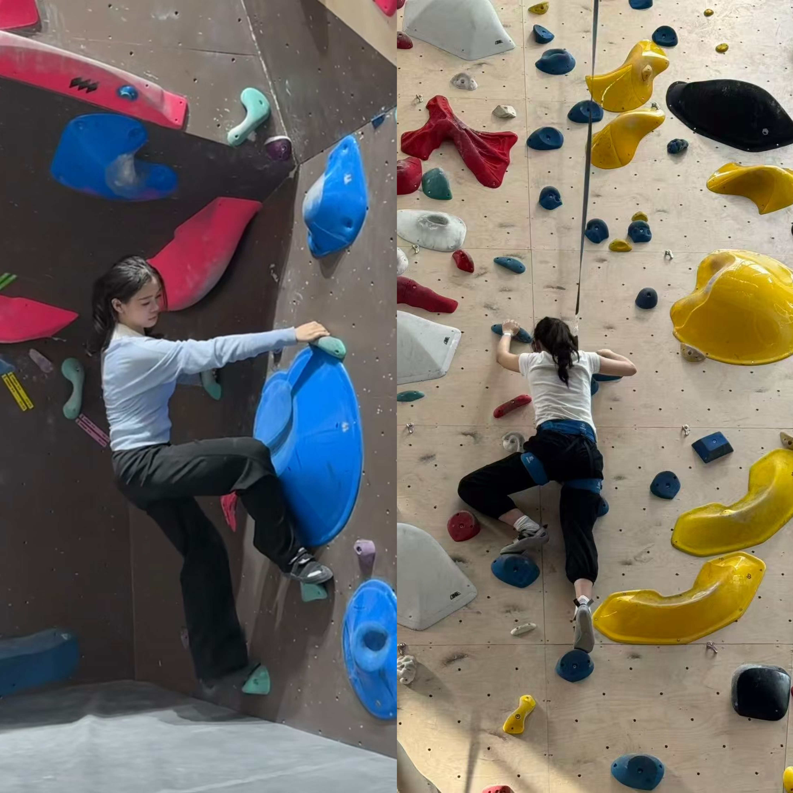
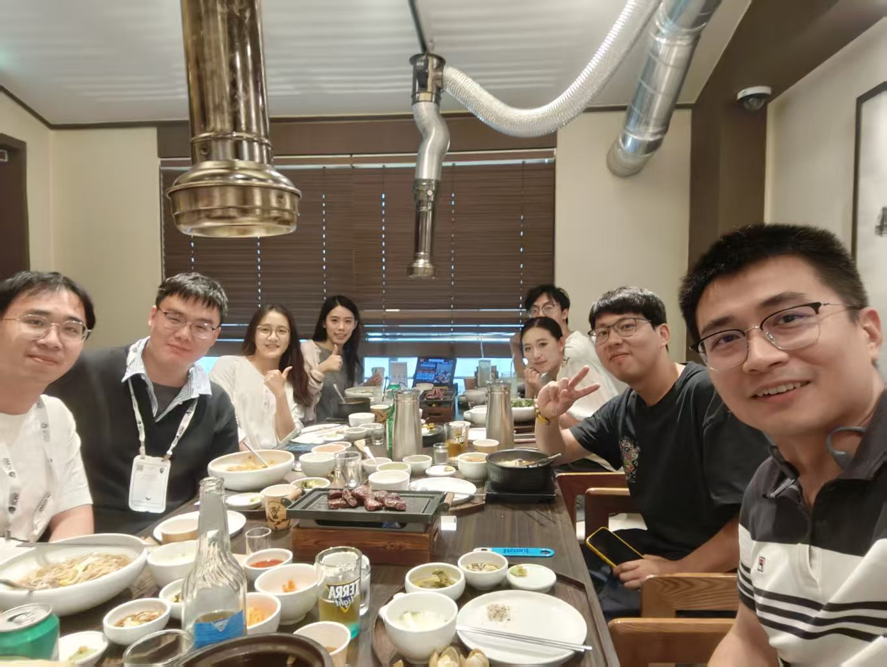

Sep 2026 — Present
Peking University Health Science Center
Institute of Medical Technology
M.S. in Medical Technology
Advisor: Prof. Zhaoheng Xie
About
AI for Science Single-cell & Spatial Omics Virtual Cells
I am a first-year master’s student at Peking University Health Science Center, working under the supervision of Prof. Zhaoheng Xie. I hold a bachelor’s degree in Computer Science and Technology and moved into Medical Technology for my graduate studies.
My research interests lie in AI for Science. I have previously worked on multimodal learning algorithms. My current work focuses on computational methods for analyzing and integrating multi-omics data, particularly single-cell and spatial omics.
I am especially interested in virtual cells, particularly algorithms for predicting cellular responses to perturbations, as well as in automating scientific discovery. Our team participated in the 2026 Virtual Cell Challenge. If you share these interests, we would be glad to exchange ideas and explore research collaborations.
01 / Background
Sep 2026 — Present
Institute of Medical Technology
M.S. in Medical Technology
Advisor: Prof. Zhaoheng Xie
Sep 2025 — Aug 2026
Research Intern
Advisors: Prof. Yiming Lu, Prof. Cheng Quan, and Prof. Zhaoheng Xie
Jul 2025 — Aug 2025
School of Computer Science and Technology
Research Intern
Advisor: Prof. Rui Zhang
Jul 2024 — Jun 2025
School of Software and Microelectronics
Research Intern
Advisors: Prof. Guoping Wang and Prof. Shaorong Wang
Sep 2022 — Jun 2026
School of Information Science and Technology
B.E. in Computer Science and Technology
02 / Research
I am interested in how AI can accelerate the process of scientific discovery, from modeling complex biological systems to automating hypothesis generation and analysis. I am particularly drawn to virtual cells, computational models that simulate cellular states and responses.
I develop and apply computational methods to analyze and integrate multi-omics data, with a focus on single-cell and spatial omics, in order to uncover the molecular mechanisms behind biological and clinical phenomena.
Previous studies have typically used single-cell analysis to investigate either aging or radiation mechanisms, with spatial transcriptomics serving as validation. However, although clinical evidence suggests a link between radiation exposure and aging, few studies have explored the relationship between them directly. We jointly analyze single-cell data and high-resolution spatial transcriptomic data collected across multiple time points and conditions, aiming to reveal how radiation and aging interact.
Existing studies of radionuclide therapy tend to rely on dosimetry alone and overlook how the treatment acts on the tissue microenvironment. By combining multi-omics with dosimetry, we aim to uncover the mechanisms behind the local efficacy of peptide receptor radionuclide therapy (PRRT). We treat the true tumor response as the joint outcome of physical dose and the microenvironment, and we study how it evolves from local dose distribution and omics changes to final clinical outcomes.
Machine learning models have long been used to predict brain age accurately from neuroimaging data, and deviations from healthy aging patterns are often associated with accelerated brain aging and abnormalities. Accurate estimation of brain age therefore requires effective and precise diagnostic techniques, and many studies using different data-driven modeling approaches have contributed to this goal. We propose a novel algorithm that combines corpus data with existing brain aging datasets to further improve the accuracy of brain age estimation.
Person re-identification (ReID) aims to match the same individual across different cameras. Existing work mostly focuses on single-modality settings based on visible-light images, but at night, infrared images can provide useful information. The key challenge is how to fuse the two modalities and reduce the gap between them to achieve visible-infrared person re-identification. We propose a novel algorithm that combines Transformer and CNN architectures for efficient and accurate re-identification.
03 / Outside the Lab
I’m someone who loves life, and I hope there’s room in mine for more than just research. 🌏
I’m grateful to our lab for creating a relaxed, free-spirited atmosphere that encourages us to explore.✨
Outside the lab, I have a soft spot for the arts. 📚
I mainly enjoy reading essays and novels, and watching films 🎬, especially suspense and medical stories. I also like taking photos 📷 to keep the moments that would otherwise slip by.
I also believe a strong body matters, so I stay active with cycling 🚴, table tennis 🏓, and rock climbing 🧗.





